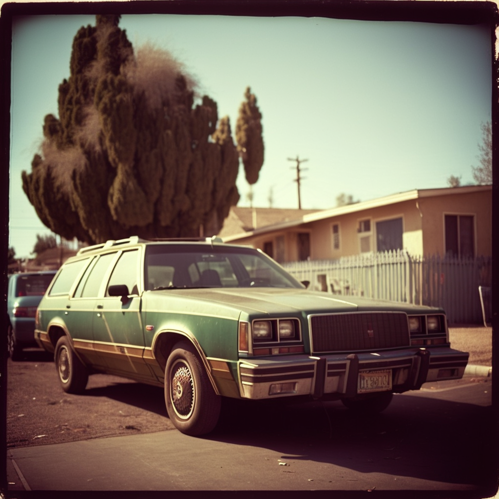
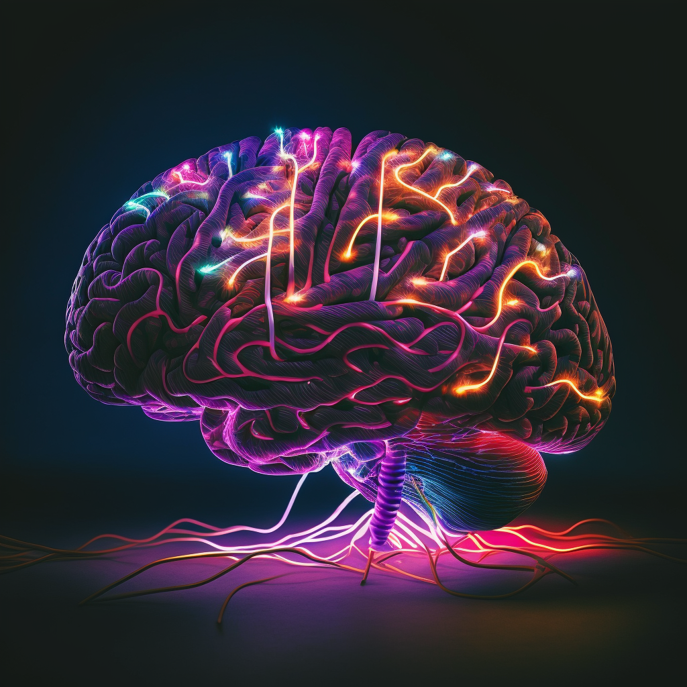

Every day presents us with its own lived character; yet, there are some things that keep us grounded—touchstones, totems that we know the feel of intimately, that allow us to hold on to the continuity of life despite its constant flux.
For me, that is coffee. From time to time, I visit a spot I’ve never been to so I can taste something exciting and new. But every day, once or twice a day, I stop in at my old stand-bys, the places whose coffee I know with the familiar precision of a mass spectrometer—every note, every contour of the activation of taste receptors from my mouth down throughout my GI tract. I know exactly the buzz I will get; I know exactly the feeling of full-body “Yes” that will take hold when I shove my nose into the top of the cup and take a big sniff of that intoxicating aroma. Coffee is the foundation—it is the ruler against which I measure the hours and days, the months and years.
Today, however, my coffee tastes different. The wonderful nutty notes, that faint hint of celery—the perfect mélange of aromatics in the double-shot of espresso holding up my cappuccino like Atlas—all of it is muted. That joy and wonderment that fills me every time I experience the luxurious mouthfeel of perfectly steamed milk is gone, replaced by something boring, mundane, mechanical—sad.
I know that the coffee isn’t different, because some part of me is still aware that the substance entering my mouth is fundamentally the same. I have lived inside of this mind long enough to know not to trust my perception to be a reflection of the real world around me. What has changed is entirely within myself: the model of the world that lays inside my mind, the blueprint used to “fill in” the details of my perception from the tenuous sensory connection that serves as my brain’s pathetic link with the external world.

On Tuesday, I learned that my uncle died. He was 69—too young—and had spent the past decade living out of his car in Hawthorne, California. He wasn’t unhappy; he was quite okay to live this life outside of the system, outside of the merciless confines of a game that he saw had sown so much injustice. My uncle was very bright: he knew the ins and outs of my grandfather’s engineering work on the system that would become GPS with Magnavox in the 1960s. He had a deep knowledge of electronics and of politics. As his obituary put it, “He was an intelligent man with a mind of his own. … [H]e gave from the little he had to others he felt he could help, grieving when the help was too late or insufficient.”
I didn’t know my uncle well. But when I learned of his death, I could watch as the world around me changed. Colors became muted. Music—a modality which normally triggers the most incredible synesthetic somatic sensations—felt flat and numb. Over the course of just a few minutes after reading that text from my mom, I could watch my perceptual world fall into darkness.
Bipolar disorder is often described medically in terms of its diagnostic criteria in the DSM 5, which center around mood episodes—ostensibly, the symptomatic manifestations of this brain difference. While the symptoms of mood episodes like depression or hypomania are certainly present for many (myself included), the diagnosis itself doesn’t explain why someone with bipolar disorder might be experiencing these states.

To the neuroscientist—and to many a biologically-minded psychiatrist—the answer must lie somewhere in the biology of the nerve cells in the brain. Somewhere in that mass of electrical activity, or the wiring diagram of collections of neurons, or the biochemistry of cells’ messages to one another, there must be a finding that correlates with these mood changes; and one of those correlates, it follows, must be the lever that controls how we feel.
But perhaps that’s not the right approach. Maybe there is something that we can learn by interrogating the lived experience of people, without resorting to electrodes or microscopes.
While ordinary waking consciousness gives us the lived character of witnessing the world as it actually is, the truth is that our perceptions are largely based on an internal model—a map inside each of our minds that captures our understanding of the interrelationships between concepts, things, and percepts in our own personal universe. Subjective experience certainly incorporates sensory data from the external world; however, that data is always interpreted in the context of the underlying internal model of the individual, such that one’s lived experience is as much a manifestation of oneself as it is a reflection of what lies beyond.
Part of the magic of possessing human experience lies in the fact that the internal model is so fabulously nonlocal: the exact way that light passes through the trees on a cool December morning evokes the feeling-tones of a long-lost memory—the apprehension of leaving my friends on the last day before winter break in elementary school. Our ability to arrange together these disparate pieces from across a lifespan underlies the immaculate beauty of our art—and the tremendous depth of our mental suffering.
Depressed mood, then, is not just a statement about one’s instantaneous feelings or behavior. It is a statement of the entire universe in which one lives in a given moment. The crux of a depressive episode is not in its expression through syndromic criteria—the SIG E CAPS and DIG FAST familiar to every medical student. No: when one is depressed, one lives in a depressed world. In this state, the architecture of one’s internal model has been molded by the influence of a new set of axioms.
Those axioms infect every concept and percept in our lexicon—every facet of our subjective being—through the associational laws that govern our internal model. Through that same mechanism that gives you that indescribable skin-crawling feeling when you listen to the score to Inception, because of the internalized understanding of brass harmony you have acquired via cultural reproduction and the psychophysics of audition. Through the same mechanism that, perhaps only a little bit, recalls the memory of my first awkward date in college, floating unseen in the background of my mind: accidentally ordering a $7 single-origin Ethiopian coffee in some hip spot in Baltimore; the winter sun; a near-forgotten conversation; the distinctive cherry overtones in that first sip. Every day when I order my second cappuccino, that engram awakens from the deep recesses of my unconscious, making my experience of coffee unmistakably my own.
My “pathology” doesn’t lie in the fraction of life I spend in mood episodes. It lies in the fact that my internal model is so easily shaped by the things that happen around me. When new data comes in, the axioms of my universe are rewritten in an instant. “I am a terrible person” is placed alongside the existence of gravity in my model of the universe. And, through the mind’s incredible ability to infer, these new axioms propagate to every corner of my conceptual map of reality—and then, to every facet of my lived experience.
The reality I walk through is as malleable as Play Doh—so malleable that it can be hard to trust that what my mind shows me is real. Perhaps that is pathology. But then again, there is something so familiar and universal about this process; I am not unique in that my internal model is shaped by the events of my life. Disappointments darken the world, and pleasant surprises giving us a lift; these are universal parts of the human experience. The aspect that is foreign is not the phenomenon itself, but only the degree. Perhaps the true pathology is that so many feel their reality is so real.
Movement IV of Mahler 5—the Adagietto—comes up on my phone’s Spotify shuffle. This recording is of the Berliner Philharmoniker with Claudio Abbado conducting. Coming in at 9 minutes, the piece sounds to me as if I am hearing it for the first time. When it’s taken any slower, it is an overwhelmingly sad piece—an elegy, fit for mourning. But at this tempo, I feel the vibrancy of life and love. At 2:45, when the strings come in full force, my whole body is overcome with the warmth and vitality of the rejuvenating fire, starting at my ankles and shooting licks of flame up through my torso, my arms, past my cheeks and out my fingertips.
As I take a sip from my coffee, I am met with the subtlety of cashew—an earthy palette of flavor that only an hour before had seemed masked, as though tasted with a clogged nose. As the final chord fades into the noise-canceled ether of my headphones, the blue of sky and the green of trees strike me with their rare brilliance. \(\,\blacksquare\)